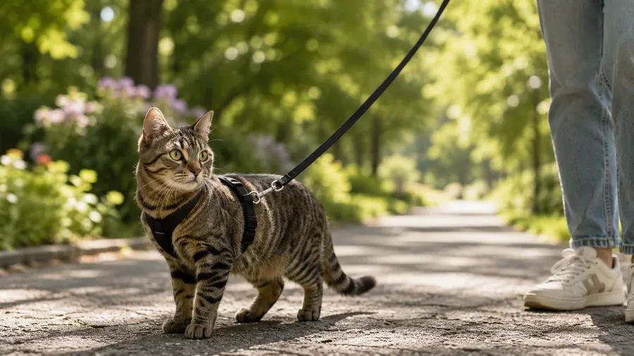
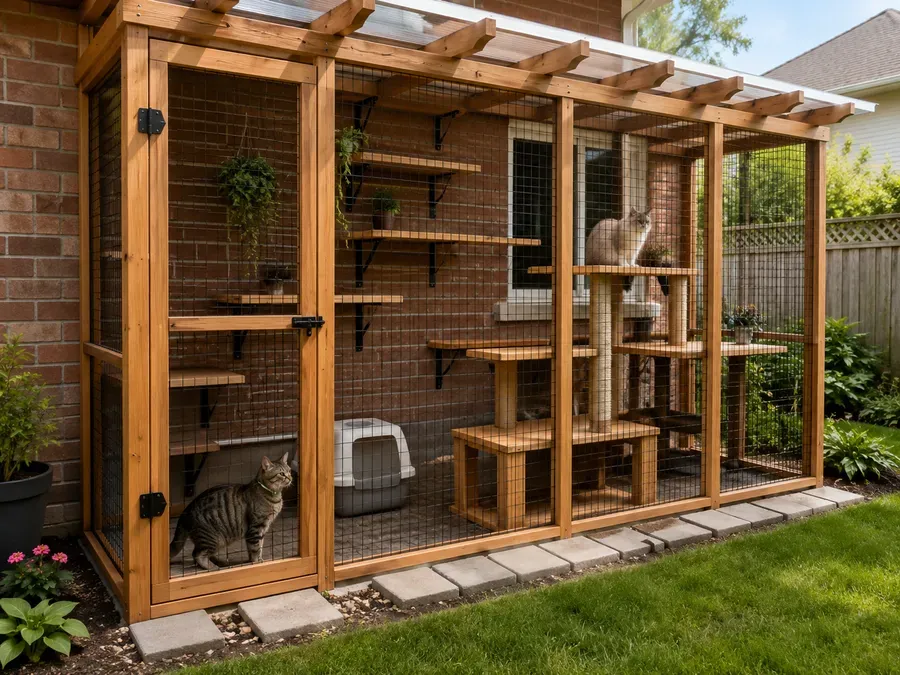

Free roaming outdoors
Letting a cat roam freely outside may seem "natural," but the modern urban environment hides deadly dangers. Statistically, indoor cats with proper care live 15–20 years, while cats living outdoors live only 4–5 years.
1Main risks
Caution
Traffic and poisoning by malicious people are the most common causes of death for cats in cities.
Predators and dogs: stray packs and wild animals pose a threat.
Infections: feline leukemia, immunodeficiency virus, and rabies can be transmitted by animals the cat might catch and eat.
Cruelty from people: poisoners, dog-hunters, and simply ill-wishers can harm a defenseless, trusting animal.
2Alternatives to free roaming: leash walks
Safe exploration of the world under your supervision. Not every cat enjoys walking on a leash, but with the right preparation, it can be a great source of variety in a cat's days.
Important during walks: make sure vaccinations are up to date; don't let the cat eat anything or interact with anyone outside — it should only eat from your hands or from home.

3Catio (outdoor enclosure)
A mesh-enclosed extension that lets your cat breathe fresh air. If you have a private house, you can build a separate cat enclosure. The main goal of such structures is to create a safe outdoor space.
These enclosures are usually built from solid wood and mesh. If dangerous animals may be nearby, use reinforced mesh and anti-digging measures.

More in this section
The information in this app comes from open sources and the experience of cat owners. It does not replace a consultation or an examination by a vet. Decisions about your pet's health and care are the owner's to make — if in any doubt, contact a vet.
All of this is in the Cat First app
Articles, checklists and first aid on your phone, even without internet.